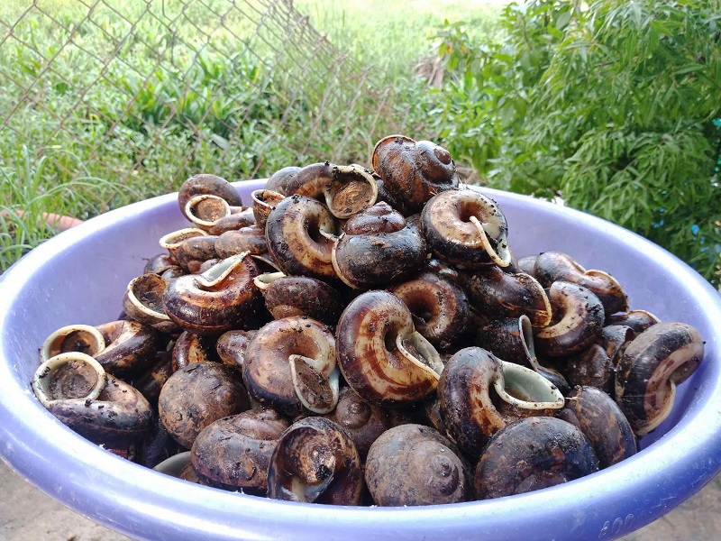
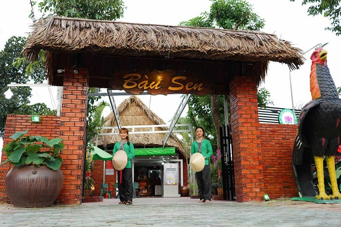
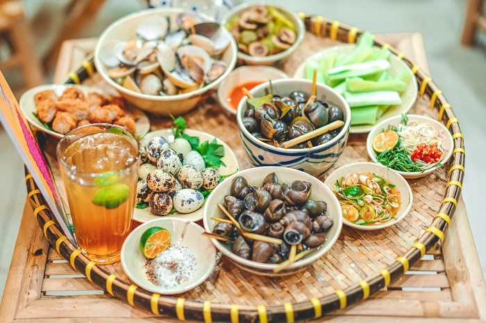
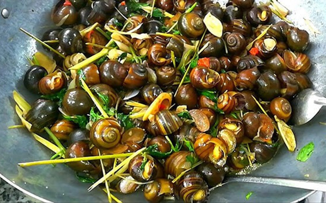
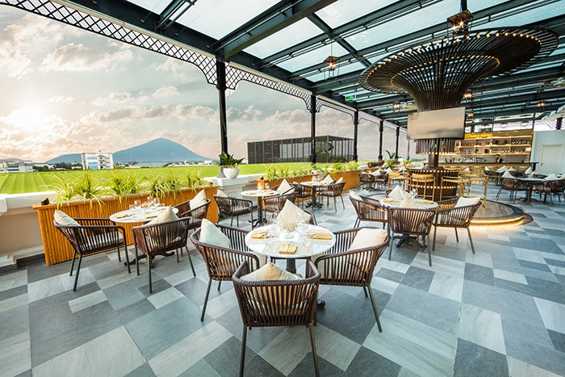
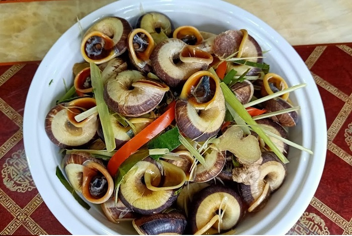
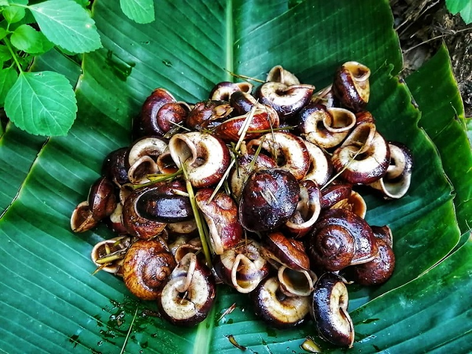
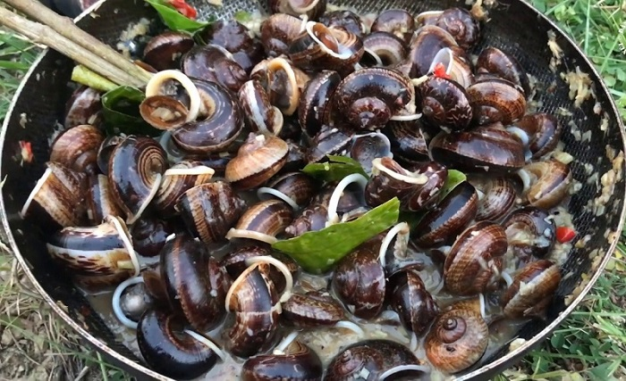

Khám phá ốc núi Tây Ninh “là ốc mà không ở dưới sông”
Ốc núi Tây Ninh còn hay được gọi là ốc xu núi Bà, ốc núi Bà Đen hoặc ốc Nàng Hai. Đây được xem là đặc sản Tây Ninh thu hút nhiều du khách ghé thăm và thưởng thức.
Thành phố Tây Ninh là một trong những điểm đến có nhiều đặc sản thơm ngon. Đặc biệt món ốc núi Tây Ninh luôn làm “xiêu lòng” nhiều thực khách bởi hương vị đậm đà và cách chế biến độc đáo, đa dạng. Hãy đến để thử ốc xào dừa, ốc hấp gừng sả, ốc xào sa tế và ốc nướng nước mắm..
1. Ốc núi Tây Ninh - đặc sản nơi đất thiêng
Ốc núi Tây Ninh là gì? Ốc núi là món ăn đặc sản Tây Ninh vô cùng nổi tiếng. Điều đặc biệt của loài ốc này là chúng sinh sống ở trên núi ăn những cây thuốc, rễ cây, lá non...nên rất bổ dưỡng và lành tính. Thậm chí mọi người còn truyền tai nhau xem ốc núi như một vị thuốc.
Tuy nhiên loài ốc này chỉ sinh sống trong các hang hốc đá, mùa mưa mới bò ra sinh sản và kiếm ăn nên rất khó phát hiện. Do đặc điểm trên nên hiện nay giá ốc núi Tây Ninh dao động trong khoảng 200.000 - 250.000 đồng/kg (khoảng 100 con) nhưng không phải dễ mua, thường chỉ những nhà hàng lớn ở Tây Ninh mới có.
Ốc núi Tây Ninh là loài ốc cạn sinh sống chủ yếu ở núi Bà Đen. (Ảnh: Sưu tầm)
2. Địa điểm ăn ốc núi Tây Ninh ngon nức tiếng
Khám phá ẩm thực Tây Ninh mà bỏ qua món ốc núi Tây Ninh thì quả thực là một thiếu sót vô cùng lớn. Hãy cùng điểm danh các địa điểm ăn uống Tây Ninh chế biến ốc núi chuẩn vị và hấp dẫn nhất nhé.
2.1. Bàu Sen Quán
- Địa chỉ: đường số 37, Nguyễn Văn Linh, Trường Tây, Hòa Thành, Tây Ninh.
Bàu Sen Quán nổi tiếng là quán ăn ngon tại Tây Ninh, thu hút không chỉ khách du lịch mà cả những người dân địa phương sành ăn. Nếu có dịp ghé Bàu Sen Quán nhất định bạn phải thưởng thức món ốc núi Tây Ninh được chế biến theo đúng kiểu truyền thống.
Quán Bàu Sen dân dã và phục vụ nhiều món ăn đặc sản Tây Ninh. (Ảnh: Sưu tầm)
Thực đơn nhà hàng cũng rất đa dạng cho thực khách tha hồ lựa chọn. Ốc núi được lấy từ chính ngọn núi Bà Đen nên độ tươi ngon không phải bàn. Đặc biệt, nhờ được chế biến dưới bàn tay điệu nghệ của các đầu bếp mà thịt ốc ở đây không những vẫn giữ được độ giòn, dai mà khi ăn bạn còn có thể cảm nhận được hương thơm thoang thoảng đặc trưng của thuốc Nam.
2.2. Quán Đồng Quê
- Địa chỉ: hẻm 15 - đường 30 Tháng 4, Phường 3,Tây Ninh.
Quán Đồng Quê phục vụ thực đơn rất đa dạng, nhiều món đặc sản như: lẩu mắm, cá lóc kho tộ, cá lóc nướng trui, rắn, lươn...và đặc biệt không thể thiếu món ốc núi Tây Ninh đặc sản trứ danh.
Điểm cộng của quán là các món ăn đều được chế biến rất vừa miệng, dễ ăn, khiến cho mọi thực khách cảm thấy vô cùng hài lòng. Không gian quán khá rộng rãi nhưng nếu bạn đi vào buổi tối sẽ thấy quán hơi đông một chút.
Nhà hàng phục vụ nhiều món ăn đặc sản làm từ ốc núi Tây Ninh. (Ảnh: Sưu tầm)
2.3. Quán Cây Phượng
- Địa chỉ: đường Bời Lời, xã Ninh Sơn, Tây Ninh.
Lại một quán ăn ngon ở Tây Ninh cho bạn thưởng thức, đó chính là quán Cây Phượng. Mặc dù chỉ là một quán ăn bình dân, không quá sang trọng thế nhưng nơi đây vẫn luôn thu hút nhiều thực khách sành ăn tìm tới.
Do có lợi thế nằm ngay gần núi Bà Đen nên hương vị của ốc núi ở quán Cây Phượng được nhiều người đánh giá là ngon, “chuẩn vị” nhất. Bên cạnh món ốc luộc truyền thống thì quán còn có thêm nhiều cách chế biến ốc khác nhau như ốc xào me, ốc núi xào ớt cay hay ốc núi nướng.
Có nhiều cách chế biến ốc núi nhưng ngon nhất vẫn là các món xào với các gia vị độc đáo. (Ảnh: Sưu tầm)
Ngoài ra, nếu lựa chọn lưu trú ở khách sạn 5 sao Melia Vinpearl Tay Ninh bên cạnh các món ăn Tây Ninh nổi tiếng bạn cũng sẽ được thưởng thức nhiều món ngon đặc sắc khác.
Đặc biệt, đến với nhà hàng 986 Bar & Bistro nằm trong khuôn viên khách sạn, vị giác của bạn còn được chiêu đãi bằng thực đơn Steakhouse chế biến từ bò tơ tươi đặc sản Tây Ninh, bò nhập khẩu và rượu vang hảo hạng. Đây là món ăn độc đáo, thơm ngon mà bất cứ du khách nào ăn một lần cũng nhớ mãi.
Thực khách có thể trải nghiệm không gian sang trọng, đẳng cấp tại 986 Bar & Bistro.
3. 4 cách chế biến ốc núi Tây Ninh thơm ngon, bổ dưỡng
Có nhiều cách làm ốc núi ngon nhưng dưới đây là 4 cách chế biến ốc núi Tây Ninh độc đáo và được thực khách ưa chuộng nhất.
3.1. Món ốc núi Tây Ninh xào dừa
Ốc núi Tây Ninh xào dừa có hương vị nước dừa đậm đà hòa quyện với vị ngọt của thịt ốc khiến thực khách khó có thể cưỡng lại. Để thưởng thức món này “đúng điệu” bạn cần nếm trước phần nước sốt béo ngậy bao ngoài vỏ ốc, sau đó hút nhẹ thịt ốc ra ngoài và nhai thật chậm, từ từ cảm nhận hương vị thơm ngon tuyệt vời.
3.2. Món ốc núi hấp gừng sả
Món ốc hấp gừng sả là một món ăn cơ bản, cực kỳ dễ ăn mà chắc chắn ai ai cũng từng thử qua. Ốc núi sau khi được rửa sạch, đợi ốc tự nhả hết đất cát rồi thì đem hấp cách thủy cùng với gừng, sả, lá chanh. Khi hoàn thành, món này có mùi sả rất thơm xen lẫn chút cay nồng của gừng, đánh tan vị tanh của ốc nhưng không hề làm mất đi vị ngọt và đậm đà của nó.
Điểm đặc biệt nhất của món ốc núi hấp gừng sả còn nằm ở phần nước chấm sền sệt hòa quyện giữa các vị ngọt, chua, cay của gừng, sả, lá chanh, ớt đỏ và muối Tây Ninh.
Ốc núi hấp gừng sả chấm với nước chấm pha ngon, hương vị thật đậm đà khó cưỡng. (Ảnh: Sưu tầm)
3.3. Món ốc núi nướng nước mắm
Mặc dù không phải là một món ăn quá phổ biến của Tây Ninh thế nhưng ốc nướng nước mắm lại là một món được nhiều người yêu thích, nhất là với những người mê nhậu. Ốc núi sau khi tách bỏ mày sẽ được đổ vào bên trong nước mắm được pha từ tỏi, ớt, sả, gừng và giấm sau đó đem nướng đều trên bếp than cho vàng ruộm và dậy mùi.
Ngay khi ốc nướng vừa chín nên ăn luôn để cảm nhận mùi thơm và hương vị đậm đà. (Ảnh: Sưu tầm)
3.4. Món ốc núi xào sa tế
Người dân Tây Ninh có vị giác “chuộng cay” nên dĩ nhiên không thể nào bỏ qua món ốc núi xào sa tế. Đặc biệt, nếu như được thưởng thức món này vào những ngày mưa mát mẻ thì quả thực không còn gì tuyệt vời hơn.
Ốc núi sau khi rửa sạch được đem đảo đều cùng với sả ớt và một số nguyên liệu riêng trong vài phút để ốc ngấm gia vị. Khi ăn, thực khách sẽ cảm thấy vị cay bên ngoài vỏ ốc nhưng phần thịt ốc lại có vị thanh mát của những loại thảo dược.
Ốc núi xào sa tế là món ăn bạn không nên bỏ qua khi ghé tới Tây Ninh. (Ảnh: Sưu tầm)
Với nền ẩm thực đặc sắc, thiên nhiên hùng vĩ và dịch vụ nghỉ dưỡng phát triển, Tây Ninh đã và đang trở thành điểm sáng của du lịch miền Đông Nam Bộ. Để có chuyến nghỉ dưỡng trọn vẹn, quý khách nên chọn đặt phòng tại Melia Vinpearl Tay Ninh với giá cực hấp dẫn.
Melia Vinpearl Tay Ninh ở vị trí trung tâm rất thuận tiện cho việc đi lại.
Lựa chọn nghỉ dưỡng tại Melia Vinpearl Tay Ninh, du khách sẽ được:
- Trải nghiệm không gian nghỉ dưỡng tiện nghi, đẳng cấp với tầm nhìn bao quát thành phố;
- Tham gia các hoạt động và tiện ích hấp dẫn: bể bơi 4 mùa; các lớp Yoga và Gym tăng cường sức khỏe, trị liệu và massage thư giãn tại Vincharm Spa;
- Thuận tiện di chuyển tới các khu du lịch nổi tiếng ở Tây Ninh như núi Bà Đen (cách khách sạn 1.5km), thung lũng Ma Thiên Lãnh (cách khách sạn 11.8km), hồ Dầu Tiếng (cách khách sạn 24.3km),...
Phía trên là một số thông tin về món ốc núi Tây Ninh, nếu quý vị muốn thưởng thức món đặc sản trứ danh này và hòa mình vào không gian ẩm thực đa dạng của Tây Ninh… thì không nên bỏ lỡ khách sạn Melia Vinpearl Tay Ninh. Đây là khách sạn 5 sao đầu tiên và cao nhất Tây Ninh với 21 tầng, gồm 127 phòng tọa lạc tại ngay trung tâm thành phố.
Lưu ý: nội dung trang web được lấy từ: Vinpearl